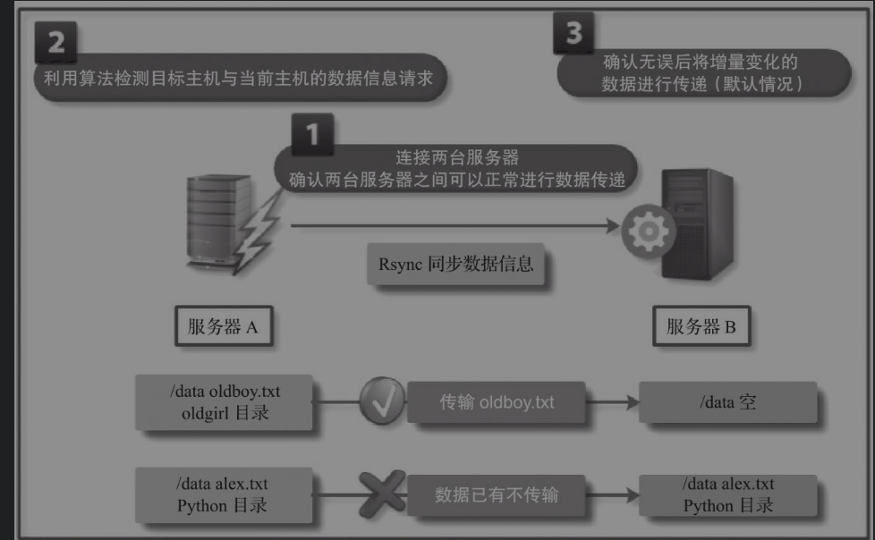
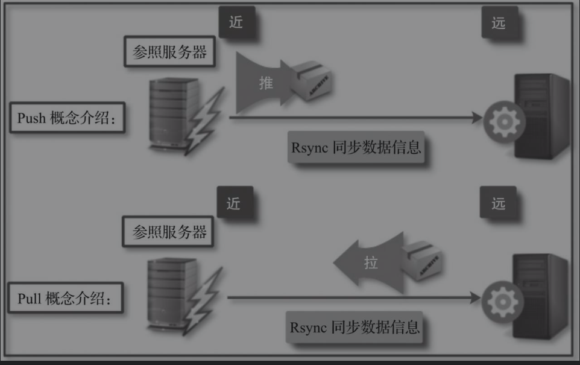
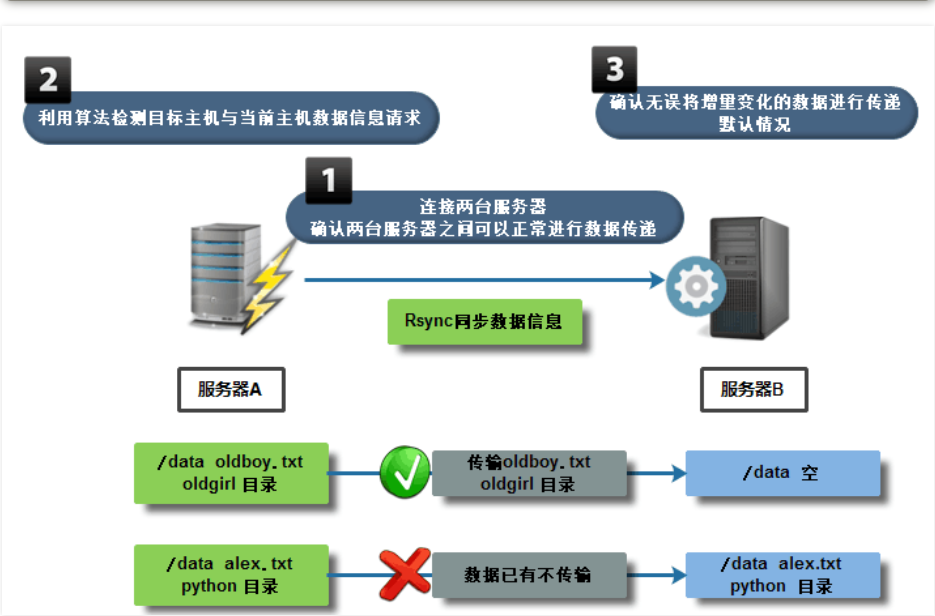
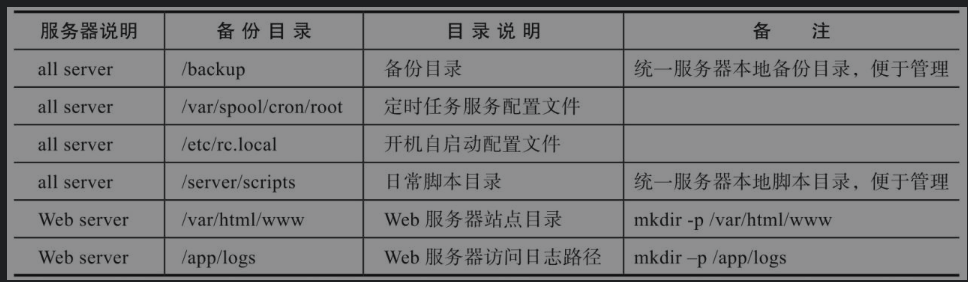
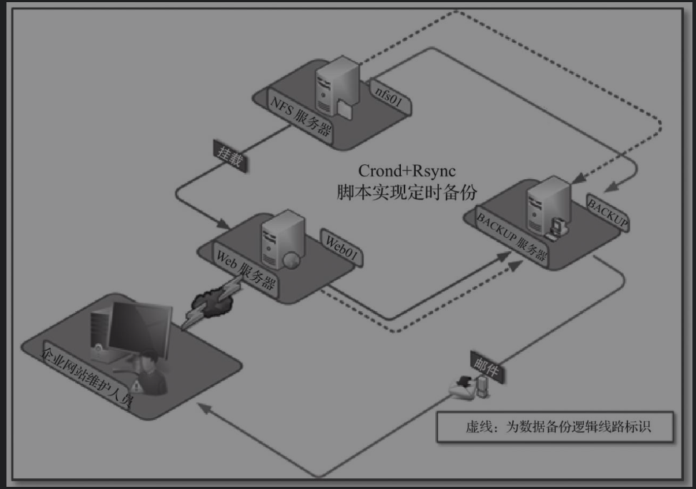

Contents
2.32. Rsync数据复制软件应用实践¶
2.32.1. 第1章 rsync 软件介绍¶
1. 什么是RsyncRsync？¶
是一款开源的快速的、可实现全量及增量的本地或远程数据备份的多功能优秀工具。并且在复制时可以不改变原有数据的属性信息，即可实现数据的备份迁移特性。Rsync软件适用于Unix/Linux/Windows等多种操作系统平台。
Rsync提供了大量参数来控制复制行为的各个方面，并且允许多种灵活的方式来实现文件的传输复制。它以其delta-transfer算法闻名。通过减少网络数据发送数量，只发送源文件和目标文件之间的差异信息，从而实现数据的增量复制。
Rsync被广泛应用于数据备份和镜像，并作为一种改进后的复制命令用于日常系统中。
官方链接：http://www.samba.org/ftp/rsync/rsync.html
官方手册：man rsync/man rsync.conf
rsync 是一款开源的、快速的、多功能的、可实现全量及增量的本地或远程数据同步备份的优秀工具。
2. Rsync功能介绍¶
Rsync英文全称为Remote synchronization，从软件名称可以看出来，Rsync具有可使本地和远程两台主机之间的数据快速复制、远程备份的功能。
Rsync软件自带的rsync命令本身就可以实现异地主机复制数据，这个功能类似scp命令（借助SSH服务实现远程传输数据），但又优于scp命令的功能，scp每次都是全量拷贝，而rsync可以增量拷贝（同样需借助SSH服务传输数据），此外，Rsync软件还支持以配置守护进程方式实现异机数据复制。
2.1 rsync命令可以实现的功能如下¶
1）实现本地数据同步复制（本地工作模式，相当于cp命令）。
2）实现远程数据同步复制（远程Shell工作模式，相当于scp命令）。
3）实现数据信息删除功能（本地工作模式，相当于rm命令）。
4）实现数据信息查看功能（本地或远程工作模式，相当于ls命令）。
2.2 Rsync的特性如下（7个特性信息说明）¶
❑ 支持拷贝普通文件与特殊文件，如链接文件、设备文件等。
❑ 支持排除指定文件或目录同步的功能，相当于打包命令tar的排除功能。
❑ 可以做到保持原文件或目录的权限、时间、软硬链接、属主、组等所有属性均不改变。
❑ 可实现增量复制，即只复制发生变化的数据，因此数据传输效率很高。
❑ 可以使用rcp、rsh、SSH等方式来配合进行隧道加密传输文件（Rsync本身不对数据加密）。
❑ 可以通过socket（进程方式）传输文件和数据（服务端和客户端)。
❑ 支持匿名或认证（无须系统用户）进程模式传输，安全地进行数据备份及镜像。
2.3 Rsync软件复制原理¶
默认情况下，在备份复制数据时，Rsync通过其独特的quick check算法，仅复制大小或者最后修改时间发生变化的文件或目录，当然也可根据权限、属主等属性的变化复制，但需要指定相应的参数，甚至可以实现只复制一个文件里有变化的部分内容，所以可以实现快速地备份复制数据，即采用增量复制方法对数据信息进行复制，与传统cp、scp复制工具的全量复制截然不同，增量复制数据在效率上远远高于全量复制。

可以利用rsync命令参数查看当前系统中Rsync软件版本信息。
[root@swarm1 rsync-3.1.3]# rsync --version
rsync version 3.1.3 protocol version 31
2.32.2. 第2章.Rsync工作方式介绍与实践¶
2.1 Rsync有3种传输数据模式¶
2.1.1．本地（Local）数据传输模式¶
Rsync的本地数据传输模式，很类似于cp本地复制命令，可以实现文件、目录的移动备份等功能，所不同的是Rsync有增量复制的功能。
2.1.2．远程Shell数据传输模式¶
远程Shell数据传输模式一般是借助通道（如SSH）在两台服务器之间进行复制数据，这两台服务器之间是对等的，没有客户端与服务端之分，整个过程类似于scp远程复制命令，所不同的是Rsync有增量复制的功能，但缺少scp的加密复制的功能。
2.1.3 守护进程(Daemon)传输模式¶
守护进程传输模式是在客户端与服务端之间进行数据复制的，通常需要服务端部署守护进程服务，然后在客户端执行命令，实现数据的拉取和推送复制。
2.2 本地数据传输模式¶
本地数据传输模式语法
rsync [option] SRC.... dest...
2.2.1 本地数据传输模式实践¶
(1)作为本地复制命令应用（类似cp命令）¶
实例1：利用rsync命令实现本地文件的复制，命令如下。
[root@swarm1 tmp]# rsync /etc/hosts /tmp/
实例2：利用rsync命令实现复制本地目录，命令如下。
[root@swarm1 tmp]# mkdir /hujianli/achang{1..9}.txt -p
[root@swarm1 tmp]# rsync -r /hujianli /tmp/
[root@swarm1 tmp]# ll hujianli/
（2）作为删除数据命令应用（类似rm命令）¶
实例1：利用rsync命令的删除功能清空目录内容，命令如下。
[root@swarm1 tmp]# mkdir /opt/null -p #创建一个空目录
[root@swarm1 tmp]# rsync -r --delete /opt/null/ /tmp/hujianli/
[root@swarm1 tmp]# ll hujianli/
总用量 0
实例2：利用rsync命令的删除功能清空文件内容，命令如下。
[root@swarm1 tmp]# echo "hujianli hello shengzheng" > file.txt
[root@swarm1 tmp]# cat file.txt
hujianli hello shengzheng
[root@swarm1 tmp]# touch null1.txt
[root@swarm1 tmp]# rsync -r --delete null1.txt /tmp/file.txt
[root@swarm1 tmp]# cat file.txt
提示：在使用rsync命令对目录数据进行本地或远程复制时，目录名称后面是否加“/”，产生的复制效果是不一样的。
（3）作为查询数据命令应用（类似ls命令）¶
实例1：利用rsync命令的查询功能查看文件和目录信息
[root@swarm1 tmp]# rsync /etc/hosts
-rw-r--r-- 241 2020/08/14 11:07:50 hosts
2.3 远程Shell数据传输模式¶
远程Shell数据传输模式语法远程Shell数据传输模式分为拉取和推送两种模式，拉取是指从远端服务器把数据拉取到本地服务器；推送是指把数据从本地服务器推送到远端服务器，这两种传输方式的语法格式如下。
rsync [option] [USER@]HOST:SRC... DEST
(1)推送
rsync [OPTION..] SRC... [USER@]HOST:DEST
Pull和Push的区别就是[USER@]HOST:SRC..和DEST位置对调而已。

3.3.1 远程Shell数据传输模式实践¶
实践1：利用拉取模式从远端服务器把/etc/hosts复制到本地/tmp
[root@swarm1 tmp]# rsync root@172.16.61.214:/etc/hosts /tmp/
#或者
[root@swarm1 tmp]# rsync -av -e "ssh -p 22" root@172.16.61.214:/etc/hosts /tmp/
#-e 参数指定隧道加密，指定端口
实践2：利用推送模式从本地服务器把/etc/hosts复制到远端主机的/tmp
[root@swarm1 tmp]# rsync -av /etc/hosts root@172.16.61.214:/temp
1）采用远程Shell数据传输模式，每次都需要输入远程主机密码信息，无法实现免交互；因此需要配合SSH key免密码登录来完成数据免交互同步。
2）该复制使用系统用户进行存在安全隐患，而使用普通用户进行又会导致权限不足。
3）实际工作中守护进程传输方式是更重要的方式。
2.4 守护进程传输模式¶

Rsync守护进程模式服务需要部署在BACKUP服务器上。
[root@swarm1 ~]# rpm -qa |grep rsync
rsync-3.1.2-4.el7.x86_64
①BACKUP服务器
1）配置rsyncd.conf。
编写rsyncd.conf单模块配置文件，命令如下。
cp /etc/rsyncd.conf{,_bak}
cat > /etc/rsyncd.conf <<eof
# This line is required by the /etc/init.d/rsyncd script
uid = rsync
gid = rsync
fake super = yes
use chroot = no
max connections = 2000
timeout = 600
pid file = /var/run/rsyncd.pid
lock file = /var/run/rsync.lock
log file = /var/log/rsyncd.log
ignore errors
read only = false
list = false
hosts allow = 172.16.61.0/24
hosts deny =0.0.0.0/32
auth users = rsync_backup
secrets file = /etc/rsync.password
############################
[backup]
comment = backup server by oldboy
path = /backup
eof
# 启动rsync程序
rsync --daemon
# 加入开机自启动
echo "rsync --daemon" >>/etc/rc.local
# 查看进程信息
ps -ef |grep rsync|grep -v grep
netstat -lntup|grep rsync
ss -lntup|grep rsync
2）创建数据备份储存目录,目录修改属主
useradd -s /sbin/nologin -M rsync
[root@swarm1 ~]# id rsync
uid=1000(rsync) gid=1000(rsync) 组=1000(rsync)
mkdir /backup && chown -R rsync.rsync /backup/
3)配置用于Rsync复制的账号、密码及账号文件权限。
在Rsync服务端创建用于在Rsync客户端与服务端进行验证的账号和密码，并将其写入文件。
[root@backup ~]# echo "rsync_backup:oldboy" >/etc/rsync.password
[root@backup ~]# cat /etc/rsync.password
rsync_backup:oldboy
[root@backup ~]# ll /etc/rsync.password
-rw------- 1 root root 20 Jun 13 00:31 /etc/rsync.password
[root@swarm1 ~]# netstat -lntup |grep rsync
tcp 0 0 0.0.0.0:873 0.0.0.0:* LISTEN 22051/rsync
tcp6 0 0 :::873 :::* LISTEN 22051/rsync
[root@swarm1 ~]# ps -ef|grep rsync
②配置rsync客户端（其他服务器为客户端）
[root@lamp01 ~]# echo "oldboy" >/etc/rsync.password
[root@lamp01 ~]# chmod 600 /etc/rsync.password
实现数据传输
交互式
[root@swarm3 ~]# rsync -avzP /etc/hosts rsync_backup@172.16.61.23::backup
Password:
sending incremental file list
hosts
241 100% 0.00kB/s 0:00:00 (xfr#1, to-chk=0/1)
sent 185 bytes received 43 bytes 65.14 bytes/sec
total size is 241 speedup is 1.06
非交互式
方法1
[root@swarm3 ~]# rsync -avzP /etc/hosts rsync_backup@172.16.61.23::backup --password-file=/etc/rsync.password
方法2
使用 RSYNC_PASSWORD 变量实现免交互
添加上环境变量
[root@nfs01 ~]# export RSYNC_PASSWORD=clsn123
测试
[root@nfs01 ~]# rsync -avzP /etc/services rsync_backup@172.16.1.41::backup
sending incremental file list
sent 29 bytes received 8 bytes 24.67 bytes/sec
total size is 641020 speedup is 17324.86
③rsync 命令同步参数选项&特殊参数
| **目录参数** | **参数说明** |
| ------------------------------------------------------------ | ------------------------------------------------------------ |
| -v ,--verbose | 详细模式输出，传输时的信息 |
| -z,--compress | 传输时进行压缩以提高传输效率--compress-level=NUM 可按级别压缩局域网可以不用压缩 |
| -a,--archive （主要） | 归档模式，表示以递归方式传输文件，并保持文件属性。等于 -rtopgDl |
| -r,--recursive **归档于-a** | 对子目录以递归模式，即目录下的所有目录都同样传输。小写r |
| -t,--times **归档于-a** | 保持文件时间信息 |
| -o,--owner **归档于-a** | 保持文件属主信息 |
| -p,--perms **归档于-a** | 保持文件权限 |
| -g,--group **归档于-a** | 保持文件属组信息 |
| -P，--progress | 显示同步的过程及传输时的进度等信息（大P） |
| -D,--devices **归档于-a** | 保持设备文件信息 |
| -l,--links **归档于-a** | 保留软连接（小写字母l） |
| -e，--rsh=COMMAND | 使用的信道协议（remote shell），指定替代rsh的shell程序。例如 ssh |
| --exclude=*PATTERN* | 指定排除不需要传输的文件信息 |
| --exclude-from=*file* | 文件名所在目录文件，即可以实现排除多个文件 |
| --bwlimit=RATE | 限速功能 |
| --delete | 让目标目录SRC和源目录数据DST一致，即无差异数据同步 |
| **保持同步目录及文件属性：**这里的-avzP相当于 -vzetopdDlP，生产环境常用的参数为 -avzP在脚本中可以报-vP去掉--progress可以用-P代替 | |
| **daemon****启动扩展参数** | |
| --daemon | daemon表示以守护进程的方式启动rsync服务。 |
| --address | 绑定指定IP地址提供服务。 |
| --config=FILE | 更改配置文件路径，而不是默认的/etc/rsyncd.conf |
| --port=PORT | 更改其它端口提供服务，而不是缺省的873端口 |
2.4.1 特殊参数实践¶
指定ip：
[root@backup ~]# rsync --daemon --address=172.16.1.41
[root@backup ~]# netstat -lntup |grep 873
tcp 0 0 172.16.1.41:873 0.0.0.0:* LISTEN 2583/rsync
参数测试：
[root@nfs01 ~]# rsync -avzP /etc/services rsync_backup@172.16.1.41::backup --password-file=/etc/rsync.password
sending incremental file list
services
641020 100% 19.34MB/s 0:00:00 (xfer#1, to-check=0/1)
sent 127417 bytes received 27 bytes 254888.00 bytes/sec
total size is 641020 speedup is 5.03
指定配置文件路径
[root@backup ~]# rsync --daemon --config=/etc/rsyncd.conf
[root@nfs01 ~]# rsync -avzP /etc/services rsync_backup@172.16.1.41::backup --password-file=/etc/rsync.password
sending incremental file list
sent 29 bytes received 8 bytes 74.00 bytes/sec
total size is 641020 speedup is 17324.86
服务端指定服务端口：
[root@backup ~]# rsync --daemon --port=5222
[root@backup ~]# netstat -lntup|grep rsync
tcp 0 0 0.0.0.0:5222 0.0.0.0:* LISTEN 2598/rsync
tcp 0 0 :::5222 :::* LISTEN 2598/rsync
2.32.3. 第3章 rsycn配置文件详解 rsyncd.conf¶
3.1 部分知识补充¶
3.1.1 配置文件内容参考资料¶
man rsyncd.conf
3.2 利用/etc/init.d/启动rsync服务方式¶
3.2.1 可以实现方式：¶
a. 编写rsync启动脚本（有一定的shell能力 if case）
b. 利用xinetd服务，管理启动rsync服务
3.2.2 利用 xinetd服务 管理rsync¶
第一个里程碑： 安装xinetd软件
[root@backup ~]# yum install -y xinetd
[root@backup ~]# rpm -qa |grep xin
xinetd-2.3.14-40.el6.x86_64
第二个里程碑：编辑配置文件
修改disable = yes 改为disable = no
[root@backup ~]# vim /etc/xinetd.d/rsync
# default: off
# description: The rsync server is a good addition to an ftp server, as it \
# allows crc checksumming etc.
service rsync
{
disable = no
flags = IPv6
socket_type = stream
wait = no
user = root
server = /usr/bin/rsync
server_args = --daemon
log_on_failure += USERID
}
第三个里程碑：重启xinetd服务
[root@backup ~]# /etc/init.d/xinetd restart
Stopping xinetd: [ OK ]
Starting xinetd: [ OK ]
传输测试
[root@nfs01 ~]# rsync -avzP /etc/services rsync_backup@172.16.1.41::backup --password-file=/etc/rsync.password
sending incremental file list
sent 29 bytes received 8 bytes 74.00 bytes/sec
total size is 641020 speedup is 17324.86
3.3 定义变量信息实现免秘钥交互¶
3.3.1 通过man手册获得方法¶
Some modules on the remote daemon may require authentication. If so, you will receive a password prompt when you connect. You can avoid the password prompt by setting the environment variable RSYNC_PASSWORD to the password you want to use or using the --password-file option. This may be useful when scripting rsync.
WARNING: On some systems environment variables are visible to all users. On those systems using --password-file is recommended.
在远程进程的一些模块可能需要认证。如果是这样的话，你将得到一个密码提示当您连接。你可以通过设置环境变量rsync_password要使用或使用密码文件选项密码避免密码提示。这可能是有用的脚本文件。
警告：在一些系统环境变量，对所有用户都是可见的。在这些系统中使用的密码文件的建议。
3.3.2 使用 RSYNC_PASSWORD 变量实现免交互¶
未设置变量之前
[root@nfs01 ~]# rsync -avzP /etc/services rsync_backup@172.16.1.41::backup
Password:
添加上环境变量
[root@nfs01 ~]# export RSYNC_PASSWORD=clsn123
测试
[root@nfs01 ~]# rsync -avzP /etc/services rsync_backup@172.16.1.41::backup
sending incremental file list
sent 29 bytes received 8 bytes 24.67 bytes/sec
total size is 641020 speedup is 17324.86
3.4 守护进程多模块功能配置¶
第一个里程碑： 编写配置信息创建多模块
# This line is required by the /etc/init.d/rsyncd script
uid = rsync
gid = rsync
fake super = yes
use chroot = no
max connections = 2000
timeout = 600
pid file = /var/run/rsyncd.pid
lock file = /var/run/rsync.lock
log file = /var/log/rsyncd.log
ignore errors
read only = false
list = false
hosts allow = 172.16.61.0/24
hosts deny =0.0.0.0/32
auth users = rsync_backup
secrets file = /etc/rsync.password
############################
[nfsdata]
comment = "nfsdata dir by clsn"
path = /backup/nfsdata
[nfsbackup]
comment = "nfsbackup dir by clsn"
path = /backup/nfsbackup
第二个里程碑： 创建多模块指定的目录
# 创建目录，并修改目录的权限
[root@backup ~]# mkdir /backup/nfs{data,backup} -p
[root@backup ~]# chown rsync.rsync /backup/nfs{data,backup
# 查看：
[root@backup ~]# ll /backup/nfs{data,backup} -d
drwxr-xr-x 2 rsync rsync 4096 Oct 12 10:05 /backup/nfsbackup
drwxr-xr-x 2 rsync rsync 4096 Oct 12 10:05 /backup/nfsdata}
第三里程碑： 利用rsync客户端进行测试
[root@swarm3 data]# mkdir /data1/hujianli{1..9} -p
[root@swarm3 data]# touch /data1/hujianli{1..9}/{1..9}.txt
[root@swarm3 data]# ll /data1
总用量 0
drwxr-xr-x. 2 root root 123 8月 23 21:38 hujianli1
drwxr-xr-x. 2 root root 123 8月 23 21:38 hujianli2
drwxr-xr-x. 2 root root 123 8月 23 21:38 hujianli3
drwxr-xr-x. 2 root root 123 8月 23 21:38 hujianli4
drwxr-xr-x. 2 root root 123 8月 23 21:38 hujianli5
drwxr-xr-x. 2 root root 123 8月 23 21:38 hujianli6
drwxr-xr-x. 2 root root 123 8月 23 21:38 hujianli7
drwxr-xr-x. 2 root root 123 8月 23 21:38 hujianli8
drwxr-xr-x. 2 root root 123 8月 23 21:38 hujianli9
[root@swarm3 data]# rsync -avz /data1/ rsync_backup@172.16.61.23::nfsdata --password-file=/etc/rsync.password
[root@swarm3 data]# rsync -avz /data1/ rsync_backup@172.16.61.23::nfsbackup --password-file=/etc/rsync.password
说明：
rsyncd.conf配置文件中，添加多模块信息，可以不用重启rsync服务，即时生效~
全局变量参数针对所有模块生效；局部变量参数只针对指定模块生效
read only参数默认配置为ture，即为只读模式
全局变量发生变化，不用重启rsync服务；局部变量发生变化，需要重启rsync服务
3.5 守护进程的排除功能实践¶
3.5.2 排除测试¶
第一个里程碑: 创建模拟测试环境
[root@swarm3 data]# mkdir /data1/hujianli{1..9} -p
[root@swarm3 data]# touch /data1/hujianli{1..9}/{1..9}.txt
第二个里程碑 利用 –exclude参数测试排除功能
# # 需求：排除hujianli1~hujianli4目录
[root@swarm3 data]# rsync -avz /data1/ --exclude=a/3.txt --exclude=hujianli1 --exclude=hujianli2 --exclude=hujianli3 --exclude=hujianli4 rsync_backup@172.16.61.23::nfsdata --password-file=/etc/rsync.password
精简方式排除
[root@swarm3 data]# rsync -avz /data1/ --exclude=a/3.txt --exclude=hujianli{1..4} rsync_backup@172.16.61.23::nfsdata --password-file=/etc/rsync.password
3.5.3 利用–exclude-from 方式进行排除¶
第一个里程碑: 创建模拟测试环境
[root@swarm3 data]# mkdir /data1/hujianli{1..9} -p
[root@swarm3 data]# touch /data1/hujianli{1..9}/{1..9}.txt
第二个里程碑：利用–exlude-from参数，测试排除功能
[root@swarm3 data1]# cat /tmp/paichu.txt
hujianli1
hujianli2
hujianli3
hujianli4
hujianli5
hujianli6
hujianli7
第三个里程碑：进行排除
[root@swarm3 data1]# rsync -avz /data1/ --exclude-from=/tmp/paichu.txt rsync_backup@172.16.61.23::nfsdata --password-file=/etc/rsync.password
sending incremental file list
./
hujianli8/
hujianli8/1.txt
hujianli8/2.txt
hujianli8/3.txt
hujianli8/4.txt
hujianli8/5.txt
hujianli8/6.txt
hujianli8/7.txt
hujianli8/8.txt
hujianli8/9.txt
hujianli9/
hujianli9/1.txt
hujianli9/2.txt
hujianli9/3.txt
hujianli9/4.txt
hujianli9/5.txt
hujianli9/6.txt
hujianli9/7.txt
hujianli9/8.txt
hujianli9/9.txt
说明：
\01. 排除文件中，需要利用相对路径指定排除信息（不能利用绝对路径）
\02. 相对路径指的是相对同步的目录信息而言，是对rsync -avz /data/ 后面的data目录进行相对
3.5.4 在配置文件中修改要排除的文件¶
第一个里程碑： 编写修改服务端配置文件
vim /etc/rsyncd.conf
[nfsdata]
comment = "nfsdata dir by clsn"
path = /backup/nfsdata
exclude=a/3.txt b c
第二个里程碑：重启rsync服务
killall rsync && sleep 1 && rsync --daemon
第三里程碑： 进行测试
[root@nfs01 data]# rsync -avz /data/ rsync_backup@172.16.1.41::nfsdata
sending incremental file list
./
a/
a/1.txt
a/2.txt
skipping daemon-excluded file "a/3.txt"
skipping daemon-excluded directory "b"
*** Skipping any contents from this failed directory ***
skipping daemon-excluded directory "c"
*** Skipping any contents from this failed directory ***
d/
d/1.txt
d/2.txt
d/3.txt
sent 407 bytes received 116 bytes 1046.00 bytes/sec
total size is 0 speedup is 0.00
rsync error: some files/attrs were not transferred (see previous errors) (code 23) at
3.6 守护进程来创建备份目录¶
通过客户端命令创建服务端备份目录中子目录
[root@swarm1 backup]# cat /etc/rsyncd.conf
.....
[backup]
comment = "backup"
path = /backup
# 推送/etc/services文件到 服务器/backup/sda/目录
[root@swarm3 data1]# rsync -avzP /etc/services rsync_backup@172.16.61.23::backup/dba/
# 推送/etc/services文件到 服务器/backup/sa/目录
[root@swarm3 data1]# rsync -avzP /etc/services rsync_backup@172.16.61.23::backup/sa/
# 推送/etc/services文件到 服务器/backup/dev/目录
[root@swarm3 data1]# rsync -avzP /etc/services rsync_backup@172.16.61.23::backup/dev/
检查结果：
[root@swarm1 backup]# tree
.
├── dba
│ └── services
├── dev
│ └── services
└── sa
└── services
3.7 守护进程的访问控制配置¶
第一个里程碑：在服务端配置文件，编写白名单策略或黑名单策略（只能取其一）
vim /etc/rsyncd.conf
hosts allow = 172.16.1.0/24
#hosts deny = 0.0.0.0/32
关于访问控制的说明：
\01. 白名单和黑名单同时存在时，默认控制策略为不匹配的传输数据信息全部放行
\02. 白名单单一存在时，默认控制策略为不匹配的传输数据信息全部禁止
\03. 黑名单单一存在时，默认控制策略为不匹配的传输数据信息全部放行
全局变量修改控制策略信息，rsync服务必须重启
第二个里程碑：客户端进行测试
[root@nfs01 backup]# rsync -avz /etc/services rsync_backup@10.0.0.41::data
@ERROR: Unknown module 'data'
rsync error: error starting client-server protocol (code 5) at main.c(1503) [sender=3.0.6]
--------------------------------------------------------------------------------
[root@nfs01 backup]# rsync -avz /etc/services sync_backup@172.16.1.41::data
sending incremental file list
sent 29 bytes received 8 bytes 74.00 bytes/sec
total size is 641020 speedup is 17324.86
3.8 守护进程无差异同步配置¶
3.8.2 实现无差异同步方法¶
第一个里程碑： 创建实验环境
[root@swarm3 data1]# ll
总用量 0
drwxr-xr-x. 2 root root 123 8月 23 21:38 hujianli1
drwxr-xr-x. 2 root root 123 8月 23 21:38 hujianli2
drwxr-xr-x. 2 root root 123 8月 23 21:38 hujianli3
drwxr-xr-x. 2 root root 123 8月 23 21:38 hujianli4
drwxr-xr-x. 2 root root 123 8月 23 21:38 hujianli5
drwxr-xr-x. 2 root root 123 8月 23 21:38 hujianli6
drwxr-xr-x. 2 root root 123 8月 23 21:38 hujianli7
drwxr-xr-x. 2 root root 123 8月 23 21:38 hujianli8
drwxr-xr-x. 2 root root 123 8月 23 21:38 hujianli9
第二个里程：进行第一次数据同步
[root@swarm3 data1]# rsync -avz --delete /data1/ rsync_backup@172.16.61.23::backup/
Password:
sending incremental file list
deleting sa/services
deleting sa/
deleting dev/services
deleting dev/
deleting dba/services
deleting dba/
deleting .updated
deleting .pwd.lock
./
hujianli1/
hujianli1/1.txt
hujianli1/2.txt
hujianli1/3.txt
hujianli1/4.txt
hujianli1/5.txt
hujianli1/6.txt
hujianli1/7.txt
hujianli1/8.txt
hujianli1/9.txt
hujianli2/
hujianli2/1.txt
hujianli2/2.txt
hujianli2/3.txt
hujianli2/4.txt
hujianli2/5.txt
hujianli2/6.txt
......
第三个里程：删除指定目录，并添加指定文件，测试无差异功能
# 删除客户端中的 hujianli{1..5} 目录，再进行无差异传输
[root@swarm3 data1]# rm -rf hujianli{1..5}
[root@swarm3 data1]# ll
总用量 0
drwxr-xr-x. 2 root root 123 8月 23 21:38 hujianli6
drwxr-xr-x. 2 root root 123 8月 23 21:38 hujianli7
drwxr-xr-x. 2 root root 123 8月 23 21:38 hujianli8
drwxr-xr-x. 2 root root 123 8月 23 21:38 hujianli9
[root@swarm3 data1]# rsync -avz --delete /data1/ rsync_backup@172.16.61.23::backup/ --password-file=/etc/rsync.password
sending incremental file list
deleting hujianli5/9.txt
deleting hujianli5/8.txt
deleting hujianli5/7.txt
deleting hujianli5/6.txt
deleting hujianli5/5.txt
deleting hujianli5/4.txt
deleting hujianli5/3.txt
deleting hujianli5/2.txt
deleting hujianli5/1.txt
3.8.3 【注意】无差异同步方法的应用¶
\01. 实现储存数据与备份数据完全一致（慎用）
rsync -avz --delete /data/ rsync_backup@172.16.1.41::backup /
\02. 快速删除大文件数据
1.mkdir /null --创建出一个空目录。
2.rsync -avz --delete /null/ /bigdata/
# 删除效率高于 rm -rf /bigdata
3.9 守护进程的列表功能配置¶
第一个里程碑： 在服务端配置文件中开启list列表功能
[root@backup ~]# vim /etc/rsyncd.conf
list = true
第二个里程碑：重启rsync服务
[root@backup ~]# killall rsync && sleep 1 && rsync --daemon
第三个里程碑： 客户端查看服务端模块信息
[root@swarm3 data1]# rsync rsync_backup@172.16.61.23::
backup "backup dir"
说明：
为了提升备份服务器安全性，建议关闭list列表功能.
2.32.4. 第4章 常见问题¶
[root@nfs01 tmp]# rsync -avz /etc/hosts rsync_backup@172.16.1.41::backup
Password:
sending incremental file list
hosts
rsync: mkstemp ".hosts.U5OCyR" (in backup) failed: Permission denied (13)
sent 200 bytes received 27 bytes 13.76 bytes/sec
total size is 371 speedup is 1.63
rsync error: some files/attrs were not transferred (see previous errors) (code 23) at main.c(1039) [sender=3.0.6]
说明：备份目录权限设置不正确
解决办法：
将服务端的备份存放目录（path值），属主和属组修改为rsync。
[root@backup ~]# chown -R rsync.rsync /backup/
2.32.6. 第五章 Rsync企业级全网备份项目案例介绍与实践¶
某公司里有一台Web服务器，里面的数据很重要，但是如果硬盘坏了数据就会丢失，现在领导要求把数据做备份，这样Web服务器数据丢失在可以进行恢复，要求如下：每天晚上00点整在Web服务器A上打包备份系统配置文件、网站程序目录及访问日志并通过rsync命令推送到服务器B上备份保留（备份思路可以是先在本地按日期打包，然后再推到备份服务器B上）。
已知3台服务器主机名分别为Web01、BACKUP、NFS01，主机信息见表
全网备份主机信息表
| 服务器说明 | 外网IP（NAT）SSH用 | 内网IP(NAT)交换数据用 | |
|---|---|---|---|
| Nginx Web | 10.0.0.7/24 | 172.16.61.23 | web01 |
| NFS存储服务器 | 10.0.0.31/24 | 172.16.61.214 | nfs01 |
| Rsync服务器 | 10.0.0.41/24 | 172.16.61.229 | backup |
（1）备份要求每天晚上00点整在Web服务器上打包备份系统配置文件、网站程序目录及访问日志并通过rsync命令推送到备份服务器BACKUP上备份保留。
5.1 具体备份需求具体的备份需求如下。¶
1）所有服务器的备份目录必须都为/backup。
2）要备份的系统配置文件包括但不限于：
❑ 定时任务服务的配置文件 (/var/spool/cron/root)（适合Web和NFS服务器）。
❑ 开机自启动的配置文件 (/etc/rc.local)（适合Web和NFS服务器）。
❑ 日常脚本的目录 (/server/scripts)。
3）Web服务器站点目录假定为/var/html/www，如果没有，可以先模拟创建。
4）Web服务器访问日志路径假定为/app/logs，如果没有，可以先模拟创建。
服务器备份信息汇总表

5.2 项目逻辑架构¶
全网备份架构逻辑示意图

第一个里程碑：
在BACKUP上部署Rsync服务在BACKUP Server上部署Rsync服务。
第二个里程碑：
客户端本地开发打包脚本Nginx webserver, NFS dataserver本地打包备份脚本实现。
1）Web01服务器待备份信息。
❑ /var/spool/cron/root、/etc/rc.local、/server/scripts。
❑ /var/html/www、/app/logs。
2）NFS01服务器待备份信息。Rsync客户端（Nginx NFS）上进行信息备份压缩脚本编写进行备份压缩脚本编写前，需要进行Web站点目录与日志目录的创建（在172.16.61.23上执行），以及创建模拟数据。
[root@web01 ~]# mkdir /var/html/www -p
[root@web01 ~]# touch /var/html/www/{1..3}.txt
[root@web01 ~]# mkdir /app/logs -p
[root@web01 ~]# touch /app/logs/{a..c}.log
[root@web01 ~]# tree /var/html/www/
/var/html/www/
├── 1.txt
├── 2.txt
└── 3.txt
0 directories, 3 files
[root@web01 ~]# tree /app/logs/
/app/logs/
├── a.log
├── b.log
└── c.log
0 directories, 3 files
Web站点目录与日志目录创建完毕后，开始编写脚本信息（脚本编写信息需要在命令行测试成功后再放入脚本文件中）。
#!/usr/bin/env bash
#usage:xxx
#scripts_name:${NAME}.sh
# author：xiaojian
Date=$(date +%F_Week0%w)
Host_IP=$(hostname -I|awk '{print $1}') # 获取内网IP
Backup_Dir="/backup/" # 备份路径
Backup_Server_IP=172.16.61.229 # 备份服务器IP
[ ! -d $Backup_Dir/$Host_IP ] && mkdir -p $Backup_Dir/$Host_IP # 创建执行目录和IP目录
cd / && tar cf $Backup_Dir/$Host_IP/sys_file_bak_${Date}_tar.gz var/spool/cron/root && \
tar rf $Backup_Dir/$Host_IP/sys_file_bak_${Date}_tar.gz etc/rc.d/rc.local && \
tar rf $Backup_Dir/$Host_IP/sys_file_bak_${Date}_tar.gz server/scripts/ && \
tar zcf $Backup_Dir/$Host_IP/www_${Date}_tar.gz var/html/www/ && \
tar zcf $Backup_Dir/$Host_IP/app_logs_${Date}_tar.gz app/logs/ && \
#给压缩备份的文件创建指纹，放入指纹库flag中，后面验证完整性
find ${Backup_Dir:-/tmp} -type f -name "*${Date}_tar.gz" |xargs md5sum > $Backup_Dir/$Host_IP/${Date}.flag
# 把备份推送到备份服务器
rsync -az $Backup_Dir rsync_backup@${Backup_Server_IP}::backup --password-file=/etc/rsync.password
# 删除7天以前的所有本地备份数据
find ${Backup_Dir:-/tmp} -type f -name "*.tar.gz" -a -name "*.flag*" -mtime +7|xargs rm -f
至此，脚本编写完成，放在所有的客户端脚本目录中执行测试即可，通过上面的配置已经完成了一部分项目需求；下面简单回顾一下之前的需求都完成了哪些，还剩哪些需求没有完成。
第三个里程碑：
配置定时任务1）编辑定时任务，实现每天00:00定时备份本地数据，并推送到备份数据Rsync服务器上。
[root@nfs01 scripts]# crontab -l
00 00 * * * /bin/sh /server/scripts/backup.sh >/dev/null 2>&1
至此，在所有客户端的本地数据备份及定时备份删除都配置完成了。
下面是Rsync服务器端相关配置。
2）编辑服务端删除文件脚本文件，删除180天前的所有备份数据，但保存每周一的。
vim /server/scripts/del_bak_data.sh
#!/usr/bin/env bash
#usage:xxx
#scripts_name:${NAME}.sh
# author：xiaojian
Backup_Dir="/backup"
# 删除7天前的压缩包和flag文件，每周一的不删
find ${Backup_Dir:-/tmp} -type f -name "*tar.gz*" ! -name "*Week01*" -o -name "*flag*" -mtime +7|xargs rm -f
# 删除180天前的所有压缩包和flag文件
find ${Backup_Dir:-/tmp} -type f -name "*tar.gz*" -name "*flag*" -mtime +180|xargs rm -f
3）配置定时任务，实现服务端180天前数据自动删除。
[root@backup scripts]# crontab -l
00 00 * * * /bin/sh /server/scripts/del_bak_data.sh >/dev/null 2>&1
第四个里程碑：
数据传输完整性验证与监控告警服务端针对客户端备份时的md5指纹数据，利用MD5命令进行验证，完成数据传输过程完整性验证。
#!/usr/bin/env bash
#usage:xxx
#scripts_name:${NAME}.sh
# author：xiaojian
Date=$(date +%F_Week0%w)
Backup_Dir="/backup/"
Check_Log="/tmp/bak.log.$(date +%F)" #<==定时检测备份结果的文件
Admin_Mail=1879324764@qq.com
find $Backup_Dir -type f -name "${Date}.flag" |xargs md5sum -c >> $Check_Log #《===对比文件指纹
if test -n $Check_Log; then #<== 如果校验不为空
mail -s "$Date backup date info $Admin_Mail <$Check_Log" #<==发邮件
else
echo "$Date backup date error, pls check it." <$Check_Log #<==报错
mail -s "$Date backup data info " $Admin_Mail <$Check_Log
cp $Check_Log{,.ori} && >$Check_Log #<== 备份并清空结果文件
fi
第五个里程碑：
配置mail使用外部SMTP发邮件需提前注册邮箱账号，并开启SMTP功能，这里推荐使用163邮箱。
vi /etc/mail.rc //如果不存在，则编辑/etc/nail.rc
在文件的末尾加入下面代码，相应帐号密码填写自己的帐号密码
set from="xxx@163.com"
set smtp=smtp.163.com
set smtp-auth-user=xxx
set smtp-auth-password=邮箱密码 注：smtp的密码
set smtp-auth=login
使用mailx发送邮件
发件人名称可不添加，第二步已配置过
假设邮件内容存储于mesg文件中，那么可以用如下2个方法：
mailx -s "发件人名称 邮件标题" xxx@163.com < mesg
cat mesg | mailx -s "发件人名称 邮件标题" xxx@163.com
多个收件人之间用逗号分隔：
cat mesg | mailx -s "发件人名称 邮件标题" xxx@163.com,xxx2@163.com,xxx3@163.com
也可以直接从命令行输入邮件内容：
mailx -s "发件人名称 邮件标题" xxx@163.com ##输入完后回车按Ctrl+D提交发送
echo hello word | mailx -v -s " title" xxx3@163.com